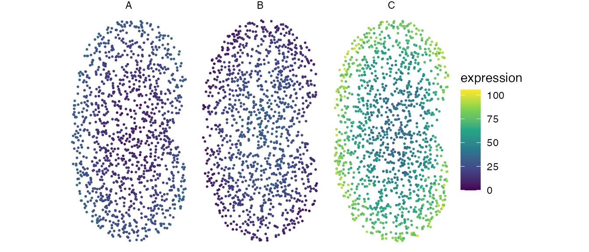
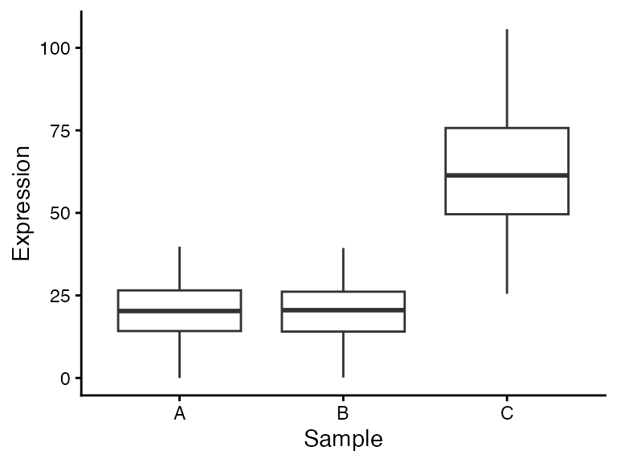
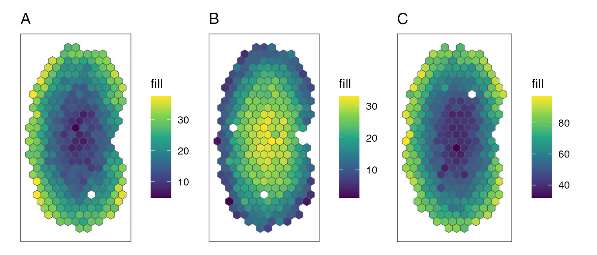
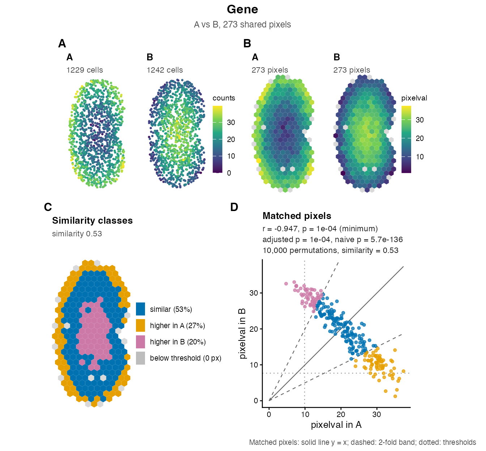
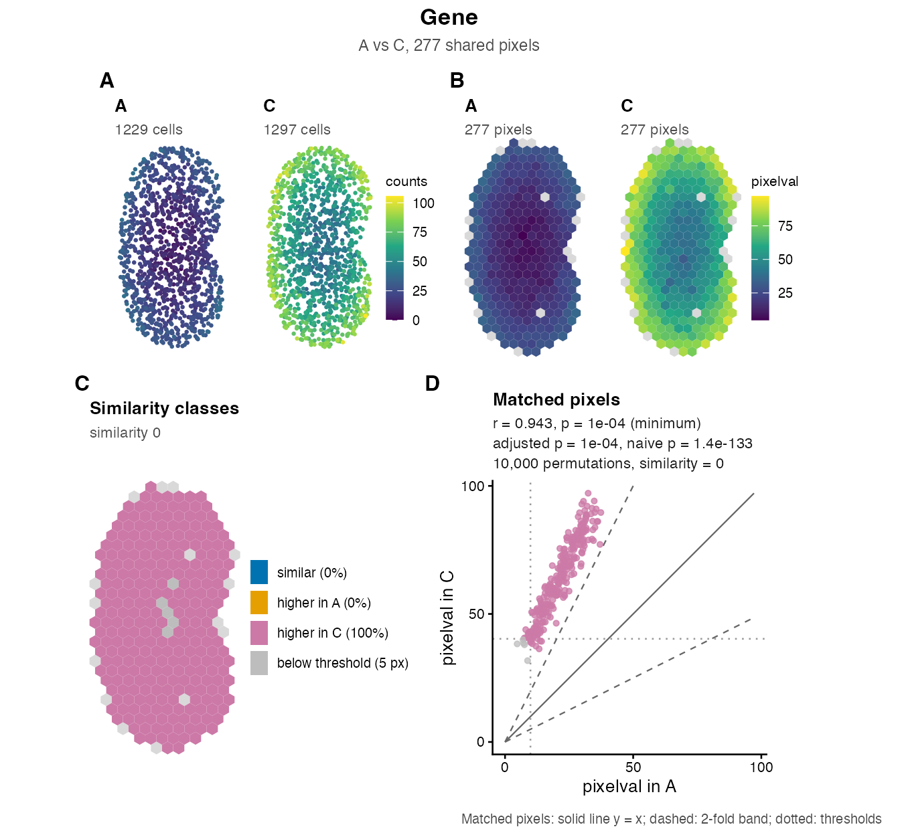
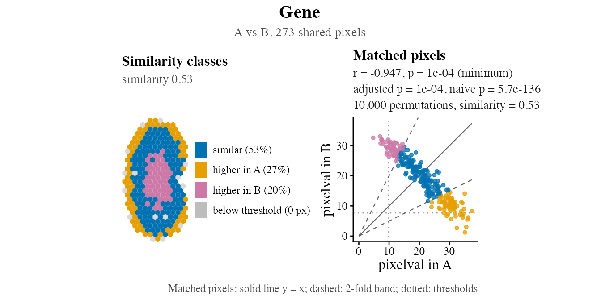
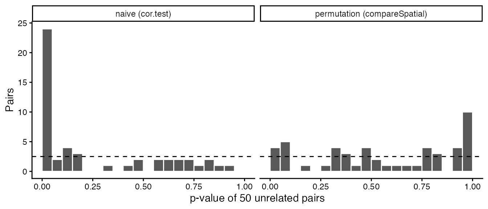
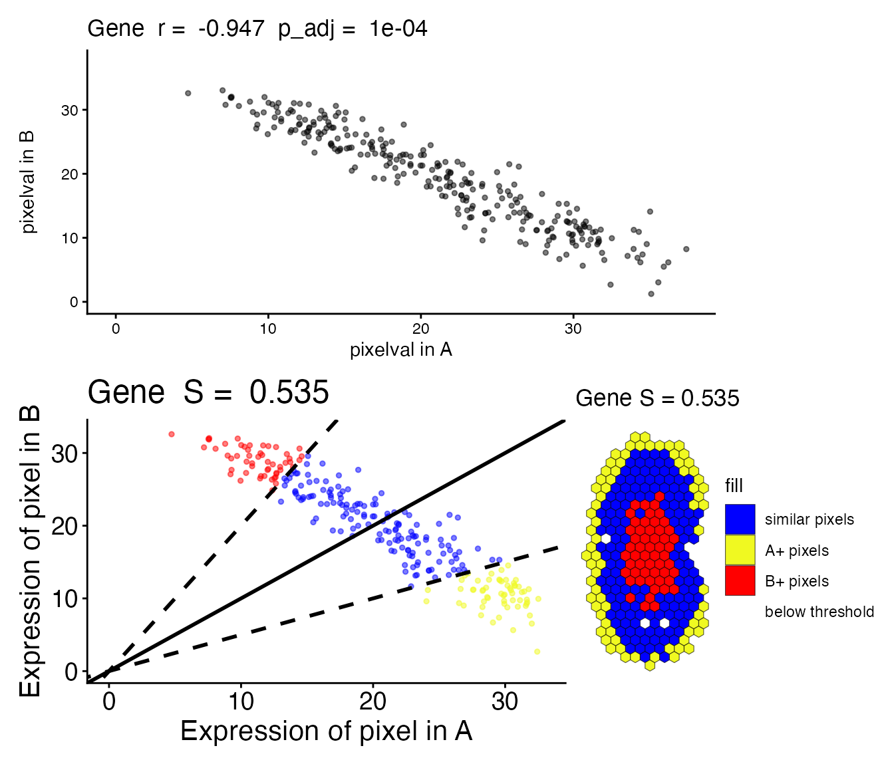

Getting started with STcompare
Vivien Jiang
Kalen Clifton
Jean Fan
Source:vignettes/getting-started-with-STcompare.Rmd
getting-started-with-STcompare.RmdIntroduction
Spatial transcriptomics (ST) measures gene expression at known locations in a tissue. When two tissues are compared, for example a diseased section and a healthy control, the usual differential expression analysis compares the mean expression of each gene and ignores where the gene is expressed. A gene can then look unchanged although its spatial pattern changed, or look changed although its pattern is the same and only its level differs.
STcompare compares two structurally matched tissues location by location. For every gene it answers two questions:
| Question | Test | Output |
|---|---|---|
| Is the gene’s spatial pattern the same in both samples? | Spatial correlation: Pearson’s correlation of the two samples over matched pixels, with a permutation p-value that accounts for spatial autocorrelation |
correlationCoef, pValuePermute,
pValuePermuteAdj
|
| Is the gene’s expression level the same at matched locations? | Spatial similarity: the share of matched pixels where the two values are within a fold change of each other |
percentSimilarity (descriptive, no p-value) |
The two tests are complementary: a gene can have the same pattern at a different level (high correlation, low similarity), or the same level with a different pattern.
This tutorial uses small simulated data that ships with the package and runs in under a minute. The method is described in Clifton et al. (2026), doi:10.1093/bioinformatics/btag644.
Simulated kidneys
speKidney is a list of three simulated single-cell
datasets, A, B and C, each a
SpatialExperiment with one gene called Gene,
its counts in the assay counts, and the x-y coordinates of
the cells in spatialCoords().
data(speKidney)
speKidney$A
#> class: SpatialExperiment
#> dim: 1 1229
#> metadata(0):
#> assays(1): counts
#> rownames(1): Gene
#> rowData names(0):
#> colnames(1229): cell1 cell2 ... cell1228 cell1229
#> colData names(1): sample_id
#> reducedDimNames(0):
#> mainExpName: NULL
#> altExpNames(0):
#> spatialCoords names(2) : x y
#> imgData names(0):
cells <- do.call(rbind, lapply(c("A", "B", "C"), function(s) {
data.frame(spatialCoords(speKidney[[s]]),
expression = assay(speKidney[[s]], "counts")["Gene", ],
sample = s)
}))
ggplot(cells, aes(x, y, colour = expression)) +
geom_point(size = 0.4) +
facet_wrap(~sample) +
coord_equal() +
scale_colour_viridis_c() +
theme_void()
A and B have the same expression levels but opposite patterns, and A and C have the same pattern at different levels. Comparing the distributions of the expression values, which is what a mean-based comparison does, misses both differences:
ggplot(cells, aes(sample, expression)) +
geom_boxplot() +
labs(x = "Sample", y = "Expression") +
theme_classic()
A and B are indistinguishable by their means, and A and C differ only by a fold change. STcompare’s two tests separate these cases.
Prepare the input
STcompare compares the same locations in two samples, so the samples must first be put on a common grid:
- Align the tissues, so that the same coordinates point to the same structure in both samples. STalign does this for sections that are not already aligned; the simulated kidneys are.
-
Rasterize both samples together,
in one call of
SEraster::rasterizeGeneExpression(). This aggregates cells or spots into pixels of a shared grid, so that a pixel name means the same location in every sample. Samples rasterized in separate calls generally do not share their grid, andcompareSpatial()refuses pixels whose coordinates differ.
rast <- SEraster::rasterizeGeneExpression(speKidney, assay_name = "counts",
resolution = 0.2, fun = "mean",
square = FALSE)
rast$A
#> class: SpatialExperiment
#> dim: 1 282
#> metadata(0):
#> assays(1): pixelval
#> rownames(1): Gene
#> rowData names(0):
#> colnames(282): pixel52 pixel53 ... pixel416 pixel417
#> colData names(6): num_cell cellID_list ... geometry sample_id
#> reducedDimNames(0):
#> mainExpName: NULL
#> altExpNames(0):
#> spatialCoords names(2) : x y
#> imgData names(0):The result is a list of SpatialExperiment objects, one
per sample, whose columns are hexagonal pixels and whose assay
pixelval holds the mean expression of the cells in each
pixel. Pixels are shared where both samples have cells.
SEraster::plotRaster(rast$A, plotTitle = "A") +
SEraster::plotRaster(rast$B, plotTitle = "B") +
SEraster::plotRaster(rast$C, plotTitle = "C")
Compare two samples
compareSpatial() runs both tests for every gene in both
samples. It takes two SpatialExperiment objects, or a named
list of two, whose names label the samples in the output. Here we
compare A with B.
ab <- compareSpatial(rast[c("A", "B")], nThreads = 2)
#> compareSpatial: 1 gene on 273 shared pixels in 1.4 s (10.0k permutations in total, 2 threads)
ab
#> STcompareResult: 1 gene on 273 shared pixels; A vs B (assay pixelval)
#> Correlation: adaptive permutation p-values (stop at 10 exceedances, at most 10000 permutations); 11 deltas from 0.01 to 0.9; rank-remapped surrogates
#> pValuePermuteAdj < 0.05: 1 gene (0 with correlationCoef > 0, 1 with correlationCoef < 0)
#> stopped early: 0; reached nPermutations: 1; skipped: 0; failed: 0
#> Similarity (|log2(y / x)| <= 1): median percentSimilarity 0.535 (0 genes with NA)
#>
#> gene nPixels correlationCoef pValueNaive pValuePermuteX pValuePermuteY
#> Gene 273 -0.947 5.65e-136 1e-04 1e-04
#> pValuePermute pValuePermuteAdj nPermutations stop deltaStarMedianX
#> 1e-04 1e-04 10000 limit 0.2
#> deltaStarMedianY deltaGridEdge percentSimilarity percentDissimilarityX
#> 0.2 FALSE 0.535 0.267
#> percentDissimilarityY numPixelInThresh t1 t2 status message
#> 0.198 273 9.87 7.67 okThe printed header summarises the settings and the counts; the table
has one row per gene. nThreads sets the number of threads;
the results do not depend on it, and
options(STcompare.nThreads = 8) sets it for a whole
session. In an interactive session, compareSpatial() also
shows a progress line with an estimate of the remaining time while the
permutations run.
A and B are strongly negatively correlated
(correlationCoef = -0.947): none of the 10000 null
correlations was as extreme, so the permutation p-value
pValuePermute is the smallest possible value, 1/10001. 53%
of their matched pixels are within two-fold of each other
(percentSimilarity). Now A and C:
ac <- compareSpatial(rast[c("A", "C")], nThreads = 2)
#> compareSpatial: 1 gene on 277 shared pixels in 1.4 s (10.0k permutations in total, 2 threads)
as.data.frame(ac)[, c("gene", "correlationCoef", "pValuePermute",
"pValuePermuteAdj", "nPermutations", "percentSimilarity",
"percentDissimilarityX", "percentDissimilarityY")]
#> gene correlationCoef pValuePermute pValuePermuteAdj nPermutations
#> Gene Gene 0.9431531 9.999e-05 9.999e-05 10000
#> percentSimilarity percentDissimilarityX percentDissimilarityY
#> Gene 0 0 1A and C are positively correlated (correlationCoef =
0.943), yet none of their pixels are within two-fold: in 100% of the
pixels kept for the similarity, C is more than twice as high as A.
Reading the result
| Column | Meaning |
|---|---|
gene, nPixels
|
The gene and the number of shared pixels. |
correlationCoef |
Pearson’s correlation of the gene’s values in the two samples over the shared pixels. |
pValueNaive |
The p-value of cor.test(), which assumes that pixels
are independent. Neighbouring pixels are not independent, so this value
is far too small; it is shown for reference only (see below). |
pValuePermuteX, pValuePermuteY
|
The permutation p-value of each direction: surrogates of the first
sample (X) correlated with the second, and surrogates of the second (Y)
correlated with the first; each is (b + 1) / (L + 1) for b null
correlations at least as extreme as the observed one among the gene’s L
permutations. Not adjusted, and descriptive: when a gene stops early,
the direction that did not reach exceedances has an
inflated value. |
pValuePermute |
The permutation p-value of the gene: the larger of the two
directions’ sequential p-values (exceedances / L for the
direction that stopped the gene, (b + 1) / (L + 1) at the limit), which
is valid whatever the dependence between the two directions. It equals
the larger of pValuePermuteX and
pValuePermuteY for a gene that reached
nPermutations, and is slightly smaller for a gene that
stopped early. It accounts for the spatial autocorrelation of both
samples: the null correlations come from surrogates of one sample that
keep its spatial autocorrelation but are unrelated to the other sample.
Not adjusted; its smallest possible value is 1 /
(nPermutations + 1). |
pValuePermuteAdj |
pValuePermute adjusted for multiple testing across the
genes of the call (Benjamini-Hochberg by default,
adjustMethod). Use this column to call a gene
significant. |
nPermutations, stop
|
How many permutations the gene used, and why it stopped:
"exceedances" when it stopped early because its p-value is
clearly not small, "limit" when it reached the
nPermutations argument. |
deltaStarMedianX, deltaStarMedianY
|
The median smoothing bandwidth (delta star) chosen for the surrogates of each sample. |
deltaGridEdge |
TRUE when most surrogates chose the smallest or the
largest bandwidth of the grid, a hint to extend the delta
argument. |
percentSimilarity |
The share (a proportion between 0 and 1, despite the name) of the
kept pixels whose values are within a fold change of each other, |log2(y
/ x)| <= foldChange (1, two-fold, by default). |
percentDissimilarityX,
percentDissimilarityY
|
The shares of kept pixels more than foldChange higher
in the first sample (X) and in the second (Y), also proportions. The
three shares add up to 1. The similarity compares fold changes, so it
needs values that are not negative: it is NA for genes with
negative values. |
numPixelInThresh, t1, t2
|
The number of pixels kept for the similarity: those above the gene’s
expression threshold in either sample, t1 in the first and
t2 in the second (its 5% quantile by default,
minQuantile). |
status, message
|
"ok"; "skipped", with the reason, for a
gene that is not tested for correlation because it is constant in a
sample (or, with surrogate = "gaussian", detected in few
pixels of a sample; see minDetected in
?compareSpatial); or "failed", with the
reason, for a gene that could not be tested (for example because of
missing values). |
The columns have the names of the legacy functions
spatialCorrelationGeneExp() and
spatialSimilarity() where both report the same quantity,
and a p-value column carries the suffix Adj exactly when it
is adjusted across genes: compareSpatial() adjusts its
combined p-value (pValuePermuteAdj), and the legacy
function adjusts each direction on its own
(pValuePermuteXAdj, pValuePermuteYAdj; see Migrating from the legacy
functions). ?compareSpatial documents every column.
as.data.frame() turns the result into a plain data
frame, and summary() gives the counts:
summary(ac)
#> compareSpatial: 1 gene on 277 shared pixels (A vs C); 1 ok, 0 skipped, 0 failed
#> Correlation, pValuePermuteAdj < 0.05: 1 gene (1 with correlationCoef > 0, 0 with correlationCoef < 0)
#> stopped early: 0; reached nPermutations: 1; skipped: 0; failed: 0
#> nPermutations per gene: median 10000, max 10000; 10,000 in total
#> settings: nPermutations = 10000, exceedances = 10, 11 deltas (0.01 to 0.9), rank-remapped surrogates, BH adjustment, seed 0
#> Similarity, percentSimilarity:
#> Min. 1st Qu. Median Mean 3rd Qu. Max.
#> 0 0 0 0 0 0
#> Run time: 1.4 sAdaptive permutations: genes that are clearly not significant stop early
The permutation p-value is computed from up to
nPermutations (10,000 by default) surrogate pairs, but a
gene stops as soon as exceedances (10 by default) null
correlations are at least as extreme as the observed one. A gene whose
patterns are unrelated stops after a few dozen permutations, while a
significant gene runs to the limit, which sets the smallest possible
p-value, 1 / (nPermutations + 1). For example, two
independently simulated patterns from
simRanPatternRasts:
data(simRanPatternRasts)
indep <- compareSpatial(simRanPatternRasts[[1]], simRanPatternRasts[[2]],
nThreads = 2)
#> compareSpatial: 1 gene on 275 shared pixels in 0.1 s (11 permutations in total, 2 threads)
as.data.frame(indep)[, c("correlationCoef", "pValuePermute", "nPermutations",
"stop")]
#> correlationCoef pValuePermute nPermutations stop
#> 1 -0.04158115 0.9090909 11 exceedancesThis gene stopped after 11 permutations, with
pValuePermute = 0.91, while A and B used all 10000. The
article How STcompare works
explains why the p-value stays valid when genes stop at different
times.
Visualizing results
plotGene() draws one standard figure for a gene of a
result: the gene at native resolution in both samples, on the shared
pixels, the similarity class of every pixel, and the expression at
matched pixels with the gene’s statistics. It takes the result, the gene
and the two rasterized objects that compareSpatial()
compared, in the same order; native gives the objects
before rasterization, in the same order, for the native-resolution
maps.

The panels, lettered for a figure legend, one letter for each pair of maps:
-
A: the cells of A and B coloured by the counts of
the gene (the first assay of the
nativeobjects;nativeAssaychooses another). -
B: the shared pixels coloured by the values that
the tests compared, here the mean counts
pixelval. The two maps of a pair share one colour scale, so that the colours of the two samples are comparable (sharedScale = FALSEgives each map its own). Pixels that one sample lacks, which the tests did not use, are light grey in every map. -
C: the similarity class of every pixel: within
two-fold in both samples (blue), more than two-fold higher in A (orange)
or in B (pink), or below the expression threshold in both (grey). The
legend gives the share of each class among the pixels above the
threshold, so the share of similar pixels is
percentSimilarity. -
D: the values at matched pixels, A horizontally and
B vertically, in the same colours; the solid line is y = x, the dashed
lines bound the two-fold band and the dotted lines are the thresholds
t1andt2(the figure’s caption is the key). The subtitle gives the gene’s row of the result:correlationCoef(r),pValuePermute(p, marked “minimum” when it is the smallest value the permutations can give),pValuePermuteAdj,pValueNaive, the number of permutations andpercentSimilarity.
The anti-correlation of A and B is the falling band of points in D, and C shows where the levels differ: around the edge of the kidney A is higher (orange), in its centre B is higher (pink). For A and C, the pattern is the same, so the points in D line up with a positive slope, but C is more than two-fold higher at every pixel, so every point lies above the band and every pixel is pink:

Without native, the figure has one row: the pixel maps
(A), the similarity classes (B) and the matched pixels (C).
panels selects panels, transform = "log1p"
draws the maps and the scatter axes on a log scale (useful for counts
that span orders of magnitude), and ?plotGene describes
every option. For a result with many genes,
plotOverview(result) draws the overview of all of them: the
correlation of every gene against its adjusted p-value, the distribution
of the similarity, and the two against each other, with the significant
genes coloured. The case
studies show it.
Saving and customizing a figure
The figure is a patchwork of ggplot2
panels, so ggplot2::ggsave() writes it in any format, with
the size in inches. With the default text size
(baseSize = 10 points), a height of 6.5 suits the two-row
figure with the native maps and 3.5 the one row without them. The maps
keep the shape of the tissue, so the tissue sets the width the figure
needs, and a wider canvas only adds blank space at the sides: these
kidneys, taller than wide, fill 7 by 6.5 and 8.5 by 3.5, while a square
tissue needs about 10 by 6.5 and 11 by 3.5.
fig <- plotGene(ab, "Gene", rast$A, rast$B, native = speKidney[c("A", "B")])
ggsave("Gene-A-vs-B.pdf", fig, width = 7, height = 6.5)
ggsave("Gene-A-vs-B.png", fig, width = 7, height = 6.5, dpi = 300)Every text, legend key and point of the figure is scaled from
baseSize, so a journal figure needs only a smaller base
size: baseSize = 7 for the full width of a page (180 mm;
these kidneys fill 125 mm of it at a height of 115 mm), and
baseSize = 6 with ncol = 2 for a single column
(90 mm).
fig <- plotGene(ab, "Gene", rast$A, rast$B, native = speKidney[c("A", "B")],
baseSize = 7)
ggsave("Gene-A-vs-B-125mm.pdf", fig, width = 125, height = 115, units = "mm")Patchwork’s & operator applies a ggplot2 theme to
every panel, and + changes the figure’s annotation; for
example, to draw only the similarity panels in a larger serif font,
without the panel letters:
plotGene(ab, "Gene", rast$A, rast$B, panels = c("similarity", "scatter")) +
plot_annotation(tag_levels = NULL) &
theme(text = element_text(family = "serif", size = 12))
Why permutation p-values? A calibration check
Neighbouring pixels have similar values: the patterns are spatially
autocorrelated. Two unrelated but smooth patterns can therefore have a
sizeable correlation by chance, much more often than
cor.test() expects from independent observations.
simRanPatternRasts holds 100 independently simulated,
spatially autocorrelated patterns rasterized onto one grid, so any two
of them are unrelated. We compare 50 disjoint pairs, (1, 2), (3, 4), and
so on, with a different seed for each pair, and collect the results.
pairs <- matrix(seq_along(simRanPatternRasts), nrow = 2)
calibration <- do.call(rbind, lapply(seq_len(ncol(pairs)), function(k) {
res <- compareSpatial(simRanPatternRasts[[pairs[1, k]]],
simRanPatternRasts[[pairs[2, k]]],
tests = "correlation", nPermutations = 1000,
seed = k, nThreads = 2, verbose = FALSE)
as.data.frame(res)
}))
nrow(calibration)
#> [1] 50
summary(calibration$nPermutations)
#> Min. 1st Qu. Median Mean 3rd Qu. Max.
#> 10.00 11.00 18.50 66.76 32.75 1000.00Most pairs stopped after a few dozen permutations, so the 50 tests take a few seconds. The null hypothesis is true for every pair, so a calibrated test gives p < 0.05 for about 5% of them:
c(naive = sum(calibration$pValueNaive < 0.05),
permutation = sum(calibration$pValuePermute < 0.05))
#> naive permutation
#> 24 4
c(naive = sum(p.adjust(calibration$pValueNaive, "BH") < 0.05),
permutation = sum(p.adjust(calibration$pValuePermute, "BH") < 0.05))
#> naive permutation
#> 20 024 of 50 naive p-values are below 0.05, and 20 pairs remain “significant” after the Benjamini-Hochberg adjustment. The permutation test gives 4 of 50, in line with the 2.5 expected by chance: the one-sided binomial p-value of seeing at least that many is 0.24, against <2e-16 for the naive test. After the adjustment, the permutation test gives 0.
pvalues <- rbind(
data.frame(test = "naive (cor.test)", p = calibration$pValueNaive),
data.frame(test = "permutation (compareSpatial)",
p = calibration$pValuePermute))
ggplot(pvalues, aes(p)) +
geom_histogram(breaks = seq(0, 1, 0.05), colour = "white") +
geom_hline(yintercept = 50 * 0.05, linetype = "dashed") +
facet_wrap(~test) +
labs(x = "p-value of 50 unrelated pairs", y = "Pairs") +
theme_classic()
Under the null hypothesis, p-values are uniformly distributed (dashed line). The naive p-values pile up near 0; the permutation p-values do not. Many permutation p-values are close to 1: a pair whose patterns are clearly unrelated reaches 10 exceedances within its first few permutations and stops with p = 10 / L, for example 1 after 10 permutations.
Migrating from the legacy functions
The functions of earlier versions are still available, unchanged in
their interface. They are computed by the same compiled engine and
reproduce the published analyses exactly. compareSpatial()
is the recommended entry point for new analyses.
| Earlier function | compareSpatial() |
|---|---|
spatialCorrelationGeneExp(list(A = a, B = b)) |
compareSpatial(list(A = a, B = b), tests = "correlation") |
spatialCorrelationGeneExpIterPermutations() (100, then
1000 permutations for promising genes) |
adaptive permutations, the default (exceedances = 10,
nPermutations = 10000) |
spatialSimilarity(list(a, b)) |
compareSpatial(a, b, tests = "similarity") |
correlationCoef, pValueNaive
|
the same |
pValuePermuteX, pValuePermuteY: the raw
p-value of each direction; pValuePermuteXAdj,
pValuePermuteYAdj: each adjusted across genes; significant
when both adjusted values are below 0.05 (before version 2.0.0 there
were no Adj columns:
spatialCorrelationGeneExpIterPermutations() returned the
adjusted values as pValuePermuteX and
pValuePermuteY, and
spatialCorrelationGeneExp(), which adjusted one gene at a
time, returned unadjusted values under these names) |
pValuePermuteX, pValuePermuteY: the raw
p-value of each direction; pValuePermute = the gene’s
p-value, the larger of the two directions’ sequential p-values;
pValuePermuteAdj = pValuePermute adjusted
across genes; significant when pValuePermuteAdj <
0.05 |
deltaStarMedianX, deltaStarMedianY
|
the same |
percentSimilarity, percentDissimilarityX,
percentDissimilarityY
|
the same |
numPixelInThresh, t1, t2
|
the same |
The differences in the results:
-
correlationCoef,pValueNaiveand the similarity scores are identical. - The permutation p-values differ:
compareSpatial()draws independent permutations for each gene and direction (the earlier functions share one set across genes), stops early for genes that are clearly not significant, gives its surrogates the gene’s own values (surrogate = "remap"; the earlier functions’ surrogates have nearly normal values,surrogate = "gaussian"), and adjusts one combined p-value per gene. On the published kidney analysis the two approaches agree on the significance of 98% of the genes; on the brain analysiscompareSpatial()finds 45 more genes among 325, which the remapped surrogates have the power to detect (see Parameters, performance and reproducibility). -
compareSpatial()tests every gene that is not constant in a sample, including genes detected in a few pixels, for which the remapped surrogates give calibrated p-values. Withsurrogate = "gaussian"such genes are skipped (minDetected), because gaussian surrogates give them p-values that are far too small. -
compareSpatial()checks that the shared pixels have the same coordinates, uses the genes present in both samples, and reports genes that are skipped or cannot be tested in itsstatusandmessagecolumns instead of stopping.
The plotting functions of earlier versions are also unchanged:
plotCorrelationGeneExp() draws the scatter plot of a gene
from the rasterized objects and a correlation result, and
linearRegression() and pixelClass() draw the
scatter plot and the map of the similarity classes from a
spatialSimilarity() result, which savePlots()
writes to files. plotGene() draws all of this, and more,
from one compareSpatial() result.
simAB <- spatialSimilarity(rast[c("A", "B")])
plotCorrelationGeneExp(rast[c("A", "B")], ab, "Gene") /
(linearRegression(simAB, "Gene") + pixelClass(simAB, "Gene"))
Next steps
- How STcompare works: the tests step by step.
- Parameters, performance and reproducibility: choosing the resolution, the smoothing grid and the number of permutations; threads and run times; seeds.
- Two case studies run the published analyses on real data in a minute or two: acute kidney injury (10x Visium) and MERFISH vs Visium in the mouse brain.
Session information
sessionInfo()
#> R version 4.6.1 (2026-06-24)
#> Platform: aarch64-apple-darwin23
#> Running under: macOS Sonoma 14.5
#>
#> Matrix products: default
#> BLAS: /Library/Frameworks/R.framework/Versions/4.6/Resources/lib/libRblas.0.dylib
#> LAPACK: /Library/Frameworks/R.framework/Versions/4.6/Resources/lib/libRlapack.dylib; LAPACK version 3.12.1
#>
#> locale:
#> [1] en_US/en_US/en_US/C/en_US/en_US
#>
#> time zone: America/New_York
#> tzcode source: internal
#>
#> attached base packages:
#> [1] stats4 stats graphics grDevices utils datasets methods
#> [8] base
#>
#> other attached packages:
#> [1] patchwork_1.3.2 ggplot2_4.0.3
#> [3] SpatialExperiment_1.22.0 SingleCellExperiment_1.34.0
#> [5] SummarizedExperiment_1.42.0 Biobase_2.72.0
#> [7] GenomicRanges_1.64.0 Seqinfo_1.2.0
#> [9] IRanges_2.46.0 S4Vectors_0.50.3
#> [11] BiocGenerics_0.58.1 generics_0.1.4
#> [13] MatrixGenerics_1.24.0 matrixStats_1.5.0
#> [15] STcompare_2.0.0
#>
#> loaded via a namespace (and not attached):
#> [1] gtable_0.3.6 rjson_0.2.23 xfun_0.62
#> [4] bslib_0.12.0 htmlwidgets_1.6.4 lattice_0.23-1
#> [7] vctrs_0.7.3 tools_4.6.1 parallel_4.6.1
#> [10] proxy_0.4-29 tibble_3.3.1 pkgconfig_2.0.3
#> [13] KernSmooth_2.23-27 Matrix_1.7-6 rearrr_0.3.5
#> [16] RColorBrewer_1.1-3 S7_0.2.2 desc_1.4.3
#> [19] lifecycle_1.0.5 compiler_4.6.1 farver_2.1.2
#> [22] textshaping_1.0.5 codetools_0.2-20 class_7.3-24
#> [25] htmltools_0.5.9 sass_0.4.10 yaml_2.3.12
#> [28] pillar_1.11.1 pkgdown_2.2.1 jquerylib_0.1.4
#> [31] classInt_0.4-11 BiocParallel_1.46.0 cachem_1.1.0
#> [34] DelayedArray_0.38.2 viridis_0.6.5 magick_2.9.1
#> [37] abind_1.4-8 tidyselect_1.2.1 digest_0.6.39
#> [40] sf_1.1-3 dplyr_1.2.1 labeling_0.4.3
#> [43] fastmap_1.2.0 grid_4.6.1 cli_3.6.6
#> [46] SparseArray_1.12.3 magrittr_2.0.5 S4Arrays_1.12.1
#> [49] e1071_1.7-17 withr_3.0.3 scales_1.4.0
#> [52] rmarkdown_2.32 XVector_0.52.0 otel_0.2.0
#> [55] gridExtra_2.3.1 ragg_1.5.2 evaluate_1.0.5
#> [58] knitr_1.52 viridisLite_0.4.3 SEraster_1.4.0
#> [61] rlang_1.3.0 Rcpp_1.1.2 DBI_1.3.0
#> [64] glue_1.8.1 jsonlite_2.0.0 R6_2.6.1
#> [67] units_1.0-1 systemfonts_1.3.2 fs_2.1.0